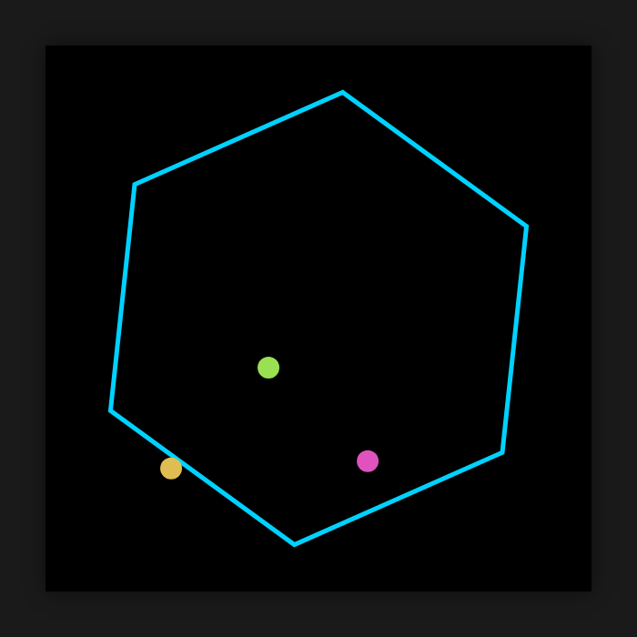

gemma 4 26b a4b 맥 스튜디오 로컬 llm 실측 성능
맥 스튜디오 M5 Max, 통합 메모리 48GB 환경에서 빠른 속도와 고품질 한국어 답변을 원하는 사용자에게 적합합니다.
맥 스튜디오 로컬 llm 구동 환경에서 gemma 4 26b a4b 모델을 mlx-lm 0.32.0으로 직접 측정했습니다. 로컬 llm 테스트 결과, 짧은 입력 기준 답 쓰는 속도는 102.9토큰/초로 사람이 읽는 속도(초당 약 다섯 토큰 안팎)보다 훨씬 빠릅니다. 가중치 용량 21.9GB에 최대 메모리 사용 22.2GB를 기록하여 통합 메모리 48GB 기기에서 여유 있게 작동합니다.
이 맥에서 잰 숫자
| 모델 | gemma-4-26B-A4B-it-qat-OptiQ-4bit |
|---|---|
| 원본 저장소 | mlx-community/gemma-4-26B-A4B-it-qat-OptiQ-4bit |
| 가중치 용량(GB) | 21.9 |
| 라이선스 | apache-2.0 |
| 측정 기기 | 맥 스튜디오 M5 Max, 통합 메모리 48GB |
| 측정 도구 | mlx-lm 0.32.0 (MLX 0.32.3) |
| 측정일 | 2026-10-20 |
| 짧은 입력(512토큰) 답 쓰는 속도(토큰/초) | 102.9 |
| 짧은 입력 읽는 속도(토큰/초) | 3655 |
| 긴 입력(4096토큰) 답 쓰는 속도(토큰/초) | 98 |
| 긴 입력 읽는 속도(토큰/초) | 5018 |
| 최대 메모리 사용(GB) | 22.2 |
| 한국어 답변 점수(5점 만점) | 5 |
| 한국어 답변에 외국어 섞임 | 없음 |
| 한국어 객관식(KMMLU 50문항) 정답 | 31 / 50 |
| 도구 호출 정확도(10문항) | 10 / 10 |
| 파이썬 코딩(10문제, 테스트 전부 통과) | 10 / 10 |
| 형식 지시 따르기(10문항) | 10 / 10 |
| 긴 글 속 문장 찾기(약 16K토큰) | 찾음 (4.4초) |
| 긴 글 속 문장 찾기(약 32K토큰) | 찾음 (9.9초) |
| 한 번에 만든 튀는 공 애니메이션 | 움직임 |
답 쓰는 속도는 1초에 만들어 내는 토큰(글자 조각) 수입니다. 같은 모델도 기기·메모리·도구 버전에 따라 달라집니다.
한국어로 물어봤더니
질문: 맥에서 로컬 AI 모델을 처음 써 보려는 대학생에게, 장점 두 가지와 주의할 점 한 가지를 한국어로 짧게 알려 줘.
맥(Mac)에서 로컬 AI 모델을 처음 시작하는 대학생을 위한 핵심 요약입니다. **✅ 장점 두 가지** 1. **개인정보 보호 및 보안:** 데이터가 외부 서버로 전송되지 않고 내 컴퓨터 안에서만 처리되므로, 과제나 연구용 민감한 데이터를 다룰 때 매우 안전합니다. 2. **인터넷 연결 불필요 및 비용 무료:** 한 번 모델을 내려받으면 인터넷 연결 없이도 언제 어디서든 무료로 무제한 사용할 수 있습니다. **⚠️ 주의할 점 한 가지** * **하드웨어 사양(통합 메모리)의 중요성:** AI 모델은 그래픽 카드(GPU)의 메모리를 많이 사용합니다. 맥은 CPU와 GPU가 메모리를 공유하는 '통합 메모리' 구조이므로, 원활한 실행을 위해서는 **RAM(메모리) 용량이 클수록(최소 16GB 이상 권장)** 훨씬 유리합니다.
맥의 통합 메모리 구조와 로컬 AI의 장점을 정확하고 자연스럽게 설명했습니다.
한 번에 만든 튀는 공 애니메이션
"회전하는 육각형 안에서 공 8개가 튀는 HTML 을 한 파일로 만들어 줘"라는 요청에 처음 낸 답을 그대로 실행한 화면입니다.

이럴 때 맞아요
- 맥 스튜디오 M5 Max 통합 메모리 48GB 환경에서 로컬 llm 모델을 구동할 때
- 사람이 읽는 속도(초당 약 다섯 토큰 안팎)보다 빠른 102.9토큰/초 속도가 필요할 때
- 한국어 답변 점수 5점 만점에 5점 및 파이썬 코딩 10 / 10의 높은 정확도를 원할 때
이럴 때는 다른 모델을
- 최대 메모리 사용 22.2GB를 확보하기 어려운 환경
- 가중치 용량 21.9GB를 적재할 여유 공간이 부족한 기기
자주 묻는 질문
gemma 4 26b a4b 모델의 답 쓰는 속도는 얼마나 빠른가요?
짧은 입력(512토큰) 기준 102.9토큰/초, 긴 입력(4096토큰) 기준 98토큰/초입니다. 이는 사람이 읽는 속도(초당 약 다섯 토큰 안팎)보다 훨씬 빠른 속도입니다.
로컬 llm 구동 시 메모리는 얼마나 차지하나요?
가중치 용량은 21.9GB이며 최대 메모리 사용은 22.2GB로 측정되었습니다. 통합 메모리 48GB를 갖춘 맥 스튜디오 M5 Max에서 여유 있게 작동합니다.
gemma 4 26b a4b 성능 중 한국어와 코딩 결과는 어떤가요?
한국어 답변 점수는 5점 만점에 5점이며 한국어 답변에 외국어 섞임은 없었습니다. 한국어 객관식(KMMLU 50문항) 정답은 31 / 50이었으며, 파이썬 코딩은 10 / 10으로 테스트를 전부 통과했습니다.
도구 호출과 긴 문맥 처리 능력은 어느 정도인가요?
도구 호출 정확도 10 / 10, 형식 지시 따르기 10 / 10을 기록했습니다. 또한 긴 글 속 문장 찾기는 약 16K토큰에서 4.4초, 약 32K토큰에서 9.9초 만에 찾았습니다.
측정 방법
맥 스튜디오 M5 Max, 통합 메모리 48GB에서 mlx-lm 0.32.0 (MLX 0.32.3)로 측정했습니다. 입력 512토큰·4096토큰 뒤 128토큰을 생성하는 시험을 여러 번 반복한 평균이고, 한국어 답변은 온도 0으로 한 번 생성한 원문 그대로입니다(생각 과정은 떼고 답만). 추가 시험(있는 경우)은 모두 코드로 채점합니다: 한국어 객관식은 KMMLU(HAERAE-HUB, CC BY-ND 4.0) 10개 분야 50문항, 도구 호출·파이썬 코딩·형식 지시는 각 10문항(코딩은 인터넷이 막힌 환경에서 숨겨진 테스트 실행), 긴 글 찾기는 약 1만6천·3만2천 토큰 글 속에 넣은 문장을 찾는지, 튀는 공은 한 번에 만든 HTML 이 실제로 움직이는지입니다. 생각 기능은 끄고 온도 0으로 실행했습니다. 가중치는 Hugging Face의 mlx-community/gemma-4-26B-A4B-it-qat-OptiQ-4bit를 썼습니다.
측정일 2026-10-20 · 커밋 한 모금